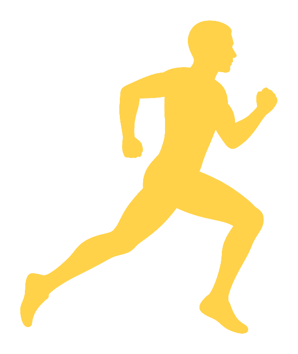

DEMO 01 踏み切り＋路面が流れる いまトップにある金色シルエットはそのまま。JavaScript で上下の踏み切りと、足元の点線が後ろへ流れる動きだけを足しています。棒人間や新しい絵は使っていません。本番の COUNTDOWN にはまだ入れていません。
DEMO 01 / COUNTDOWN SLOT

SAME MOTION · LARGER
動きを見るための拡大です。中身は上と同じです。